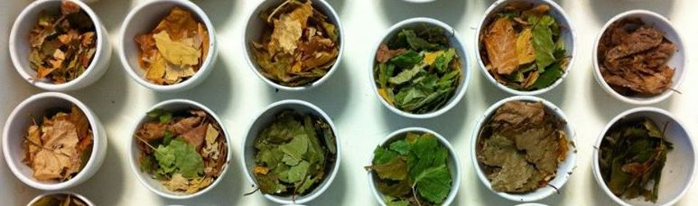

remotes::install_github("matt-dray/dray")
tl;dr
In which a Markov chain perfectly summarises my entire PhD thesis:
In general, litter chemical composition and decomposition.
{markovifyR}
I posted a while back about using a Markov chain to generate sentences using my PhD thesis as input. I also posted about the {markovifyR} package for generating lyrics by The Mountain Goats.
This is a quick update to that original post, but this time I’m using {markovifyR}.
Some code
The PhD text is available from my {dray} package on GitHub:
I’ll remove the blank lines and ignore the preamble and references section. As a reminder, the thesis is about the decomposition of tree litter that’s been exposed to environmental stressors like elevated carbon dioxide levels and acidified streams.
phd_text <- dray::phd # get data
phd_text <- phd_text[nchar(phd_text) > 0] # remove blank lines
phd_text <- phd_text[27:376] # ignore preamble and references
phd_text[1:2][1] "Acknowledgements"
[2] "The study of rotting detritus is not for the faint-hearted. I am indebted to many people for their help and advice."Now to prepare the work space. {markovifyR} is a wrapper of the markovify Python module. You first need to install markovify. You can do this from the command line with pip3 install markovify, for example (though this will depend on the version of Python you have). You can also run command-line code from R with a call to system():
system("pip3 install markovify")And then ensure you’ve installed {markovifyR} from GitHub and also the dependency {furrr}.
library(markovifyR) # remotes::install_github("abresler/markovifyR")
library(furrr) # install.packages("furrr")The function generate_markovify_model() builds the model and markovify_text() generate some sentences based on that model.
# Build model
markov_model <- generate_markovify_model(
input_text = phd_text,
markov_state_size = 2L,
max_overlap_total = 25,
max_overlap_ratio = 0.7
)
# Generate lines
phd_speak <- markovify_text(
markov_model = markov_model,
maximum_sentence_length = NULL,
output_column_name = "phd_speak",
count = 50,
tries = 50,
only_distinct = TRUE,
return_message = FALSE
)
head(phd_speak)# A tibble: 6 × 2
idRow phd_speak
<int> <chr>
1 1 Initial lignin concentrations after 268 days were compared by pairwise …
2 2 5.3.1 Leaf litter growth condition on any measure of invertebrate feedi…
3 3 It is, however, generally patchy in time and space, making it difficult…
4 4 Specifically, it considers how elevated atmospheric CO2, and rural litt…
5 5 Conversely to lignin, carbon and nutrient storage in both the aquatic s…
6 6 Bag positions were randomised within each species were selected to repr…I haven’t spent much time tweaking the arguments in generate_markovify_model(), but the results are pretty amusing anyway.
Robo-thesis
I ran this a few times and picked some favourites.
| Output | Hot take |
|---|---|
| In general, litter chemical composition and decomposition. | This is the ultimate summary of my thesis. |
| This thesis is the total nitrogen content of the North American Benthological Society. | I’m sure the NABS has more nitrogen in its possession. |
| This simplicity has allowed for broad underlying principles to be linked to litter chemical composition differently depending on whether it was exposed to a labeled 0.5 m steel rod. | Holy smokes, who knew that the steel rods were the deciding factor? Were they radioactive or something? |
| Deciduous woodlands are dependent on the parent tree. | Yes, all deciduous woodlands have one central master tree from which all the others are descended. |
| Currently there is a key ecosystem process in temperate deciduous woodlands and streams. | Yes, but what is it? I must know! |
| Canadian Journal of the laboratory in a randomly-ordered 3 × 3 grid. | That is one niche academic journal. |
| I am grateful for the choice test. | I designed and ran it, so I have only myself to thank. |
| My parents have never wavered in their responses, suggesting that caution has to be available online in the CEF. | It seems the Controlled Environment Facility (CEF) cannot control for the effect of parental input; best to provide some guidance on what to do if parental influence is strong. |
| Bonferroni-adjusted critical significance levels were compared by pairwise PERMANOVA. | That sure sounds like statistics! |
| This reduced decomposition rate in the University’s Open Access repository and for inter-library loan, and for inter-library loan, and for inter-library loans. | Ah good, slower-decomposing books will last longer; apparently this is important for inter-library loans? |
Very science, much thesis
Once again, simply copy and paste several of these sentences into your own thesis. The benefit is that you won’t have to grow any trees in a high carbon-dioxide atmosphere; you won’t have to spend months packing leaves into tiny bags; you won’t have to attach those bags to tens of IKEA cutlery holders and dunk them in frozen streams in mid-Wales; you won’t have to grind those leaves into a suspicious-looking powder and transport them cross-country for chemical analyses; you won’t have to imprison any insects against their will. You are welcome.
Good luck at your viva!
Environment
Session info
Last rendered: 2023-08-02 14:11:58 BSTR version 4.3.1 (2023-06-16)
Platform: aarch64-apple-darwin20 (64-bit)
Running under: macOS Ventura 13.2.1
Matrix products: default
BLAS: /Library/Frameworks/R.framework/Versions/4.3-arm64/Resources/lib/libRblas.0.dylib
LAPACK: /Library/Frameworks/R.framework/Versions/4.3-arm64/Resources/lib/libRlapack.dylib; LAPACK version 3.11.0
locale:
[1] en_US.UTF-8/en_US.UTF-8/en_US.UTF-8/C/en_US.UTF-8/en_US.UTF-8
time zone: Europe/London
tzcode source: internal
attached base packages:
[1] stats graphics grDevices utils datasets methods base
other attached packages:
[1] purrr_1.0.1 furrr_0.3.1 future_1.33.0 markovifyR_0.102
loaded via a namespace (and not attached):
[1] Matrix_1.5-4.1 jsonlite_1.8.7 dplyr_1.1.2 compiler_4.3.1
[5] plotrix_3.8-2 tidyselect_1.2.0 Rcpp_1.0.11 stringr_1.5.0
[9] parallel_4.3.1 png_0.1-8 globals_0.16.2 yaml_2.3.7
[13] fastmap_1.1.1 here_1.0.1 lattice_0.21-8 reticulate_1.30
[17] R6_2.5.1 generics_0.1.3 dray_0.0.0.9000 knitr_1.43.1
[21] htmlwidgets_1.6.2 tibble_3.2.1 rprojroot_2.0.3 pillar_1.9.0
[25] RColorBrewer_1.1-3 rlang_1.1.1 utf8_1.2.3 wordcloud_2.6
[29] stringi_1.7.12 xfun_0.39 cli_3.6.1 withr_2.5.0
[33] magrittr_2.0.3 grid_4.3.1 digest_0.6.33 rstudioapi_0.15.0
[37] lifecycle_1.0.3 vctrs_0.6.3 evaluate_0.21 glue_1.6.2
[41] listenv_0.9.0 codetools_0.2-19 parallelly_1.36.0 fansi_1.0.4
[45] gifski_1.12.0-1 rmarkdown_2.23 tools_4.3.1 pkgconfig_2.0.3
[49] htmltools_0.5.5 Reuse
CC BY-NC-SA 4.0